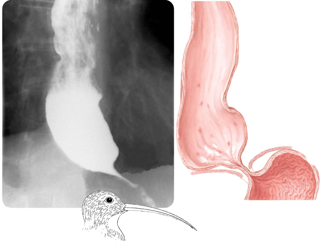

Co Thắt Tâm Vị
I. Đại cương
– Co thắt tâm vị (Achalasia) hay co thắt tâm vị nguyên phát là rối loạn vận động thực quản nguyên phát, đặc trưng bởi mất nhu động thân thực quản và suy giảm hoặc mất khả năng giãn của cơ thắt thực quản dưới khi nuốt:
+ Tình trạng tắc nghẽn chức năng tại chỗ nối thực quản – dạ dày dẫn đến ứ đọng thức ăn, dịch tiết và giãn thực quản tiến triển.
+ Tắc nghẽn đoạn xa thực quản do các nguyên nhân thực thể khác (đặc biệt là tổn thương ác tính) biểu hiện tương tự được gọi là co thắt tâm vị thứ phát hay giả co thắt tâm vị (pseudoachalasia).
– Dịch tễ: Bệnh hiếm gặp với tỷ lệ mới mắc khoảng 1–2/100.000 dân/năm, thường khởi phát ở độ tuổi trung niên (30–60 tuổi) và không có sự khác biệt về giới tính.
– Căn nguyên: Phần lớn là vô căn; một số trường hợp liên quan đến thoái hóa thần kinh tự miễn sau nhiễm virus, yếu tố di truyền hoặc bệnh Chagas (do Trypanosoma cruzi gây tổn thương tương tự).
– Cơ chế bệnh sinh: Thoái hóa và mất chọn lọc các tế bào thần kinh ức chế (tiết nitric oxide và VIP) trong đám rối cơ ruột Auerbach tại đoạn xa thực quản và cơ thắt thực quản dưới:
+ Mất cân bằng giữa tín hiệu kích thích (cholinergic) và ức chế làm cơ thắt thực quản dưới tăng trương lực lúc nghỉ và không giãn ra được khi nuốt.
+ Mất phối hợp nhu động tiến triển ở 2/3 dưới thực quản (vùng cơ trơn) do tổn thương đám rối Auerbach kết hợp thoái hóa dây thần kinh phế vị, dẫn đến giãn thân thực quản và ứ đọng mạn tính.
– Biểu hiện lâm sàng: Triệu chứng khởi phát âm thầm, tiến triển chậm và thường gián đoạn ở giai đoạn đầu:
+ Khó nuốt (triệu chứng hằng định nhất): xuất hiện đồng thời với cả thức ăn đặc và chất lỏng ngay từ đầu (khác với hẹp cơ học do ung thư thường chỉ khó nuốt thức ăn đặc trước).
+ Trào ngược thức ăn chưa tiêu hóa và nước bọt: tăng lên khi nằm hoặc khi bệnh tiến triển, dễ chẩn đoán nhầm với bệnh trào ngược dạ dày – thực quản.
+ Đau ngực sau xương ức và sụt cân: đau ngực gặp nhiều hơn ở thể co thắt (typ III) và có xu hướng giảm dần khi thực quản giãn lớn ở giai đoạn muộn.
– Biến chứng:
+ Viêm phổi hít và biến chứng phổi mạn tính: ứ đọng kéo dài dịch và mảnh vụn thức ăn làm tăng nguy cơ hít sặc vào đường thở, gây viêm phổi tái diễn, áp xe phổi hoặc giãn phế quản.
+ Viêm thực quản ứ đọng và nhiễm nấm Candida: kích thích hóa học mạn tính và lên men thức ăn gây viêm loét niêm mạc, dày thành thứ phát và bội nhiễm nấm.
+ Ung thư biểu mô tế bào vảy thực quản: nguy cơ tăng cao ở bệnh nhân mắc bệnh kéo dài (> 10–15 năm) với tỷ lệ tích lũy khoảng 3–5%, thường gặp ở 1/3 giữa thực quản do kích thích niêm mạc mạn tính.
+ Chèn ép và tắc nghẽn đường thở cấp tính: biến chứng hiếm gặp nhưng đe dọa tính mạng khi thực quản giãn khổng lồ chèn ép mặt sau khí quản, cần đặt ống thông dẫn lưu thực quản giải áp khẩn cấp.
– Phân bố và phân loại: Tổn thương tập trung ở cơ thắt thực quản dưới và thân thực quản đoạn cơ trơn; phân loại Chicago (cập nhật v4.0, 2021) dựa trên đo áp lực thực quản độ phân giải cao chia thành 3 typ có giá trị tiên lượng đáp ứng điều trị (typ I kinh điển, typ II có nén áp lực toàn thực quản đáp ứng tốt nhất, typ III co thắt đoạn xa đáp ứng kém nhất).
– Vai trò CĐHA: Chụp thực quản cản quang (đặc biệt chụp thực quản cản quang có định giờ) đánh giá hình thái, mức độ ứ đọng và loại trừ tắc nghẽn cơ học; cắt lớp vi tính giúp loại trừ giả co thắt tâm vị ác tính và đánh giá biến chứng hô hấp, trong khi đo áp lực thực quản độ phân giải cao là tiêu chuẩn vàng chẩn đoán xác định.


© Chẩn Đoán Hình Ảnh Xray.vn
II. Chẩn đoán x-quang
– Đặc điểm hình ảnh: Thực quản giãn lớn, kéo dài và uốn khúc (dạng sigma ở giai đoạn muộn) thường lệch sang phải tạo dải hoặc khối mờ trung thất không đồng nhất chồng lên bờ phải tim và trung thất:
+ Giải phẫu tự nhiên của cung động mạch chủ ở bên trái đẩy thực quản giãn lệch sang phải; hiếm gặp khối mờ lồi bờ trái trung thất khi động mạch chủ ngực xuống vồng hoặc giãn xoắn.
+ Không xóa bờ phải tim trên phim thẳng (dấu hiệu bóng bờ âm tính) do thực quản nằm ở trung thất sau, giúp phân biệt với tổn thương trung thất giữa hoặc thùy giữa phổi phải.
+ Giới hạn độ nhạy thấp ở giai đoạn sớm hoặc khi thực quản chưa giãn đáng kể (hình ảnh X-quang ngực có thể hoàn toàn bình thường), dễ chẩn đoán nhầm với u trung thất sau hoặc phình động mạch chủ ngực.


=> Case lâm sàng 1:


=> Case lâm sàng 2:


=> Case lâm sàng 3:


=> Case lâm sàng 4:


– Bóng khí thực quản hoặc mức dịch – khí trong trung thất xuất hiện trên phim chụp tư thế đứng do thực quản giãn mất nhu động ứ đọng hỗn hợp khí, dịch tiết và cặn thức ăn phía trên cơ thắt thực quản dưới không giãn:
+ Bề mặt phân cách giữa dịch – thức ăn và lớp khí phía trên thường lởm chởm hoặc tạo dải lốm đốm không đồng nhất do mảnh vụn thức ăn chưa tiêu hóa nổi trên bề mặt dịch.
+ Thường quan sát rõ ở vùng trung thất sau – trên hoặc cạnh phải khí quản trên phim thẳng và sau khí quản trên phim nghiêng, có giá trị phân biệt với khối u đặc trung thất hoặc phình mạch máu lớn.


=> Case lâm sàng 1:


=> Case lâm sàng 2:


=> Case lâm sàng 3:


=> Case lâm sàng 4:


=> Case lâm sàng 5:


=> Case lâm sàng 5:


– Bóng hơi dạ dày thu nhỏ hoặc biến mất hoàn toàn trên phim X-quang ngực hoặc bụng tư thế đứng:
+ Lớp cột dịch và thức ăn ứ đọng thường xuyên ở đoạn xa thực quản đóng vai trò như nút bịt kín ngăn khí nuốt vào đi qua cơ thắt thực quản dưới không giãn để xuống dạ dày.
+ Thường đi kèm dấu hiệu giãn thực quản tạo dải mờ trung thất sau trên cùng phim chụp, củng cố chẩn đoán co thắt tâm vị và gợi ý mức độ tắc nghẽn chức năng đáng kể tại tâm vị.


– Khí quản bị đẩy dịch chuyển ra phía trước và thu hẹp nhẹ dải sáng hậu khí quản trên phim X-quang ngực tư thế nghiêng:
+ Thực quản nằm ngay sau khí quản trong trung thất sau nên khi giãn lớn chứa đầy dịch và thức ăn sẽ trực tiếp chèn ép thành sau khí quản (phần màng sụn mềm).
+ Dấu hiệu này thường đi kèm dải mờ trung thất sau hoặc mức dịch – khí sau khí quản trên phim nghiêng, giúp định vị tổn thương thuộc thực quản và phân biệt với khối u trung thất trước – giữa đẩy khí quản ra sau.


– Biến chứng: Tổn thương nhu mô phổi hai bên trên phim X-quang ngực do hít sặc dịch tiết và cặn thức ăn ứ đọng từ thực quản giãn lớn vào đường thở:
+ Viêm phổi hít cấp tính biểu hiện bằng các đám mờ phế nang hoặc đông đặc tập trung ở vùng thấp của phổi (thùy dưới hai bên khi đứng hoặc phân thùy sau thùy trên, phân thùy đỉnh thùy dưới khi nằm).
+ Viêm phổi hít mạn tính tái diễn gây tổn thương mô kẽ dạng lưới – nốt lan tỏa, dày thành phế quản và xơ hóa ưu thế ở vùng đáy phổi.
III. Chụp TQ cản quang
– Chụp thực quản cản quang đường uống bằng hỗn dịch Barium sulfate cho thấy thân thực quản phía trên giãn lớn, thuôn nhỏ đều đặn và đối xứng tại chỗ nối thực quản – dạ dày, tạo hình ảnh kinh điển dạng mỏ chim (bird’s beak sign) hoặc đuôi chuột (rat-tail sign):
+ Đoạn hẹp vùng tâm vị trong co thắt tâm vị nguyên phát có bờ nhẵn, đồng tâm, thẳng trục và thường có chiều dài < 3,5 cm.
+ Niêm mạc vùng chuyển tiếp vẫn mềm mại và liên tục, phân biệt với đoạn hẹp ngắn lệch tâm, bờ nham nhở, gập góc hoặc chiều dài > 3,5 cm của giả co thắt tâm vị do nguyên nhân ác tính.
+ Lưu ý kỹ thuật ưu tiên dùng thuốc cản quang tan trong nước không ion hóa (tránh Barium) nếu nghi ngờ biến chứng thủng thực quản hoặc nguy cơ hít sặc nặng vào đường thở.


– Thực quản giãn thẳng trục, bờ đều, ứ đọng thuốc cản quang kèm dịch tiết và cặn thức ăn cũ khi thân thực quản mất trương lực hoặc vô nhu động ở giai đoạn tiến triển:
+ Các mảnh thức ăn chưa tiêu hóa tạo khuyết sáng lởm chởm nổi trên bề mặt hoặc lơ lửng trong cột thuốc cản quang, giúp phân biệt với dịch ứ đọng đơn thuần.
+ Không ghi nhận sóng nhu động nguyên phát lan truyền bình thường dọc thân thực quản trên chiếu tăng sáng truyền hình; ở giai đoạn muộn thực quản giãn lớn và uốn khúc tạo hình ảnh thực quản dạng sigma (sigmoid esophagus).
– Đánh giá định lượng: Kỹ thuật chụp thực quản cản quang có định giờ (timed barium esophagogram) đo chiều cao và chiều rộng tối đa của cột thuốc cản quang tại các mốc 1 phút, 2 phút và 5 phút sau khi uống nhanh 100–250 mL hỗn dịch Barium sulfate nồng độ thấp ở tư thế đứng thẳng:
+ Chiều cao cột thuốc được đo từ chỗ nối thực quản – dạ dày (đỉnh mỏ chim) lên đến mặt phân cách trên cùng giữa cột thuốc cản quang và lớp dịch nổi phía trên.
+ Chiều cao cột thuốc sau 5 phút > 5 cm (hoặc > 2 cm tùy ngưỡng quy ước) cho thấy chậm làm rỗng thực quản đáng kể, giúp lượng giá khách quan mức độ ứ đọng trước điều trị.


=> Case lâm sàng 1:


=> Case lâm sàng 2:


=> Case lâm sàng 3:


=> Case lâm sàng 4:


=> Case lâm sàng 5:


– Dấu hiệu đuôi chuột (rat-tail sign) hoặc dấu hiệu mỏ chim (bird’s beak sign) đặc trưng bởi thân thực quản đoạn trên giãn rộng, thuôn nhỏ đều đặn và đối xứng tại chỗ nối thực quản – dạ dày:
+ Tạo nên do cơ thắt thực quản dưới không giãn được khi nuốt, khiến cột thuốc cản quang Barium sulfate dừng lại ở tâm vị và chỉ lách qua một khe hẹp đồng tâm, bờ nhẵn.
+ Hình thái thuôn nhọn đối xứng này giúp phân biệt với hẹp đột ngột, lệch tâm và bờ nham nhở dạng lõi táo (apple-core sign) của ung thư thực quản đoạn xa.


=> Case lâm sàng 1:


– Thực quản ứ đọng cột thuốc cản quang kéo dài phía trên tâm vị, lượng thuốc thoát xuống dạ dày rất ít và chậm khi theo dõi trên các phim chụp nối tiếp tư thế đứng:
+ Trên chiếu tăng sáng truyền hình, cột thuốc dừng lại tại chỗ nối thực quản – dạ dày và chỉ rỉ từng đợt nhỏ xuống dạ dày khi áp lực thủy tĩnh của cột dịch vượt ngưỡng kháng trở của cơ thắt thực quản dưới.
+ Mức độ ứ đọng thuốc cản quang phản ánh trực tiếp tình trạng suy giảm làm rỗng thực quản do mất nhu động đẩy và không giãn cơ thắt tâm vị, giúp phân biệt với hẹp thực quản do khối u vốn thường còn duy trì nhu động đoạn trên.

=> Case lâm sàng 1:


=> Case lâm sàng 2:


– Lưu thông qua chỗ nối thực quản – dạ dày diễn ra gián đoạn do chỉ xảy ra khi áp lực thủy tĩnh của cột dịch và thức ăn ứ đọng vượt ngưỡng kháng trở của cơ thắt thực quản dưới không giãn:
+ Khi cột thuốc cản quang hoặc thức ăn đủ nặng để thắng trương lực cơ thắt, thuốc mới rỉ qua tâm vị thành từng đợt nhỏ rồi van chức năng này lập tức đóng lại.
+ Cơ chế này giải thích đồng thời tình trạng thuốc cản quang xuống dạ dày ít trên chiếu tăng sáng và dấu hiệu thu nhỏ hoặc mất bóng hơi dạ dày do lớp dịch ứ đọng ngăn khí nuốt đi xuống.
=> Case lâm sàng 1:


=> Case lâm sàng 2:


– Theo dõi: Chụp thực quản cản quang có định giờ đánh giá khách quan hiệu quả làm rỗng thực quản sau nong bóng, phẫu thuật Heller hoặc cắt cơ thực quản qua nội soi đường miệng (POEM):
+ Đáp ứng tốt thể hiện qua chiều cao cột thuốc cản quang ở phút thứ 5 giảm đáng kể (thường giảm > 50% so với trước điều trị hoặc < 2 cm) và thuốc lưu thông nhanh xuống dạ dày.
+ Loại trừ biến chứng rò rỉ thuốc cản quang sớm sau can thiệp (dùng thuốc cản quang tan trong nước không ion hóa trước) và phát hiện tái phát tắc nghẽn khi cột thuốc ứ đọng tăng trở lại.

IV. Chẩn đoán CLVT
– Đặc điểm hình ảnh cắt lớp vi tính: Thân thực quản giãn rộng lan tỏa với thành mỏng đều và nhẵn (thường < 3 mm khi căng giãn), lòng chứa đầy dịch tiết, cặn thức ăn không đồng nhất và các bóng khí nhỏ:
+ Thường tạo mức dịch – khí trong lòng thực quản trên các lát cắt ngang, với bề mặt phân cách lởm chởm do mảnh vụn thức ăn nổi trên lớp dịch ứ đọng.
+ Chỗ nối thực quản – dạ dày thu hẹp khẩu kính đối xứng, thành mỏng đều hoặc chỉ dày nhẹ đồng tâm lan tỏa (< 5 mm) và ngấm thuốc đồng nhất sau tiêm, không có khối choán chỗ hay dày thành khu trú lệch tâm.
+ Giai đoạn muộn có thể thấy thực quản giãn khổng lồ, kéo dài, gập khúc (dạng sigma) lệch sang phải và đè đẩy khí quản ra trước hoặc chèn ép các cấu trúc trung thất lân cận.
– Vai trò CĐHA: Cắt lớp vi tính ngực – bụng có tiêm thuốc cản quang giữ vai trò cốt lõi trong việc loại trừ giả co thắt tâm vị (đặc biệt là ung thư biểu mô chỗ nối thực quản – dạ dày, ung thư dạ dày xâm lấn dưới niêm mạc hoặc u trung thất chèn ép từ ngoài):
+ Dấu hiệu gợi ý tổn thương ác tính cần cảnh giác gồm dày thành khu trú không đối xứng (> 10 mm), ngấm thuốc không đồng nhất, thâm nhiễm lớp mỡ quanh thực quản – tâm vị hoặc hạch to vùng trung thất và thân tạng.
+ Đánh giá toàn diện các biến chứng hô hấp đi kèm do hít sặc mạn tính như viêm phổi hít thùy dưới, nốt mờ trung tâm tiểu thùy dạng chồi cây, giãn phế quản hoặc áp xe phổi.
– Cạm bẫy: Cặn thức ăn đặc ứ đọng sát vùng tâm vị hoặc thành thực quản gấp nếp ở giai đoạn chưa giãn căng có thể giả khối u nội lòng hoặc dày thành giả tạo, cần đối chiếu với tư thế chụp hoặc làm sạch thực quản khi nghi ngờ.


=> Case lâm sàng 1:


=> Case lâm sàng 2:


=> Case lâm sàng 3:


V. Phân biệt
1. Giả co thắt tâm vị
– Giả co thắt tâm vị (pseudoachalasia) hay co thắt tâm vị thứ phát là tình trạng giãn thực quản kèm rối loạn làm rỗng giống co thắt tâm vị nguyên phát nhưng do tắc nghẽn thực thể hoặc tổn thương thần kinh – cơ thứ phát tại đoạn xa thực quản hay chỗ nối thực quản – dạ dày:
+ Khác với co thắt tâm vị nguyên phát do thoái hóa đám rối cơ ruột Auerbach vô căn, giả co thắt tâm vị bắt nguồn từ khối u, xâm lấn thần kinh, sẹo hẹp hoặc bệnh hệ thống.
+ Biểu hiện lâm sàng (khó nuốt tiến triển nhanh, sụt cân, trào ngược) và một số dấu hiệu hình ảnh (giãn thân thực quản, ứ đọng dịch/thức ăn, thuôn hẹp vùng tâm vị) dễ chồng lấp với co thắt tâm vị nguyên phát.
– Nguyên nhân: Khối u ác tính chiếm ưu thế (đặc biệt ung thư biểu mô tuyến tâm vị – đáy vị xâm lấn dưới niêm mạc lên đoạn xa thực quản), bên cạnh các nhóm nguyên nhân thực thể và thần kinh khác:
+ Bệnh lý ác tính: ung thư thực quản 1/3 dưới, ung thư dạ dày (tâm vị và đáy vị lan rộng dưới niêm mạc), lymphoma, ung thư phổi hoặc trung thất xâm lấn trực tiếp và hội chứng cận ung thư.
+ Bệnh lý thần kinh trung ương hoặc ngoại biên và chuyển hóa: nhồi máu thân não, xâm lấn hoặc tổn thương dây thần kinh phế vị (kể cả sau cắt dây thần kinh phế vị hai bên), bệnh lý thần kinh do đái tháo đường và thoái hóa thần kinh.
+ Hẹp thực quản lành tính và bệnh mô liên kết: sẹo hẹp do trào ngược dạ dày – thực quản, bỏng thực quản do nuốt hóa chất ăn mòn (axit hoặc kiềm), thiếu máu cục bộ thực quản và xơ cứng bì.
– Đặc điểm hình ảnh: Hình ảnh chụp thực quản cản quang và cắt lớp vi tính gợi ý giả co thắt tâm vị thứ phát khi đoạn hẹp tâm vị kém đối xứng và thực quản giãn thường ở mức nhẹ đến trung bình:
+ Thân thực quản đoạn trên thường giãn nhẹ (đường kính thường < 4 cm) và diễn tiến nhanh hơn so với giãn thực quản khổng lồ hoặc dạng sigma mạn tính của co thắt tâm vị nguyên phát.
+ Giảm hoặc mất nhu động thực quản thứ phát do tắc nghẽn cơ học kéo dài hoặc xâm lấn đám rối thần kinh – thành thực quản.
+ Đoạn hẹp ở chỗ nối thực quản – dạ dày thường lệch tâm, bờ không đều hoặc nham nhở, gập góc, có thể kèm cứng thành hoặc phá vỡ cấu trúc niêm mạc trên cản quang.
+ Chiều dài đoạn hẹp thường > 3,5 cm (đặc biệt trong u xâm lấn vùng tâm vị – đáy vị), tuy nhiên trường hợp u nhỏ khu trú vẫn có thể có đoạn hẹp ngắn < 3,5 cm.
+ Trên cắt lớp vi tính ngực – bụng có tiêm thuốc cản quang, có thể thấy khối choán chỗ, dày thành không đối xứng hoặc lệch tâm, xóa mờ lớp mỡ quanh thực quản – tâm vị, hạch vùng hoặc tổn thương phổi/trung thất nguyên phát đi kèm.
– Cạm bẫy: Dựa đơn thuần vào hình ảnh cản quang hoặc chiều dài đoạn hẹp dễ bỏ sót giả co thắt tâm vị ác tính ở giai đoạn sớm hoặc khi khối u ngầm dưới niêm mạc:
+ Khối u nhỏ vùng tâm vị hoặc u lan rộng dưới niêm mạc có thể tạo hình ảnh thuôn nhọn tương đối nhẵn giống dấu hiệu mỏ chim của co thắt tâm vị nguyên phát.
+ Ngược lại, co thắt tâm vị nguyên phát giãn uốn khúc hoặc có cặn thức ăn ứ đọng ở tâm vị có thể bị đọc nhầm là hẹp không đều hay khối choán chỗ trên chụp thực quản cản quang hoặc cắt lớp vi tính; cần phối hợp cắt lớp vi tính, nội soi tiêu hóa trên kèm sinh thiết sâu và siêu âm nội soi khi nghi ngờ.


2. Ung thư thực quản
– Đặc điểm hình ảnh: Ung thư thực quản đoạn xa hoặc vùng tâm vị gây hẹp lòng thực quản kèm giãn nhẹ đoạn trên trên chụp thực quản cản quang và cắt lớp vi tính, nhưng có hình thái đoạn hẹp và lưu thông khác biệt với co thắt tâm vị nguyên phát:
+ Thực quản đoạn trên giãn nhẹ đến trung bình, ít khi giãn lớn kéo dài hay uốn khúc dạng sigma như co thắt tâm vị mạn tính.
+ Đoạn hẹp chuyển tiếp đột ngột, bờ không đều, nham nhở, gập góc và lệch trục tạo dấu hiệu lõi táo do khối u xâm lấn thành và phá vỡ niêm mạc.
+ Thuốc cản quang thường vẫn lưu thông qua đoạn hẹp xuống dạ dày và tá tràng, khác với tình trạng ứ đọng kéo dài và chỉ rỉ gián đoạn qua khe hẹp đồng tâm của co thắt tâm vị.
+ Bóng khí trong phình vị dạ dày thường vẫn rõ vì u xâm lấn khu trú thường chưa tạo nút dịch ứ đọng bít kín liên tục qua tâm vị như co thắt tâm vị.
– Phân biệt: Đối chiếu với co thắt tâm vị nguyên phát:
+ Khác biệt cốt lõi nằm ở đoạn hẹp lệch tâm, bờ nham nhở, phá hủy niêm mạc và lưu thông thuốc/khí xuống dạ dày còn bảo tồn tương đối trong ung thư thực quản, trái ngược với đoạn hẹp thuôn nhọn đồng tâm, bờ nhẵn và ứ đọng nặng trong co thắt tâm vị.
+ Điểm chồng lấp và cạm bẫy xảy ra khi ung thư xâm lấn dưới niêm mạc vùng tâm vị tạo bờ tương đối nhẵn giống dấu hiệu mỏ chim, hoặc khi dịch/thức ăn ứ đọng nhiều ở co thắt tâm vị làm khó đánh giá bờ đoạn hẹp; cần kết hợp cắt lớp vi tính có tiêm thuốc cản quang, nội soi tiêu hóa trên sinh thiết và siêu âm nội soi để xác định.
=> Case lâm sàng 1:


=> Case lâm sàng 2:


=> Case lâm sàng 3:


3. Sau phẫu thuật
– Phẫu thuật cắt thực quản tạo hình bằng ống dạ dày (tiêu biểu là phẫu thuật Ivor Lewis mô tả năm 1944 cho ung thư thực quản 1/3 giữa và 1/3 dưới) cắt bỏ đoạn thực quản bệnh lý và tái lập lưu thông tiêu hóa bằng miệng nối thực quản – ống dạ dày: Có thể gây rối loạn vận động hoặc ứ đọng tại ống dạ dày hay miệng nối giống co thắt tâm vị sau phẫu thuật do cắt dây thần kinh phế vị hai bên, hẹp miệng nối, ứ đọng dịch dạ dày hoặc u tái phát.
– Đặc điểm hình ảnh: Chụp thực quản cản quang và cắt lớp vi tính sau mổ giúp đánh giá hình thái ống dạ dày, khẩu kính miệng nối và sự lưu thông thuốc cản quang:
+ Ống dạ dày đưa lên trung thất hoặc khoang ngực thường nằm dọc bên phải hoặc trung thất sau, thành mỏng đều nếu không có biến chứng.
+ Trên chụp thực quản cản quang, thuốc cản quang đi qua miệng nối vào ống dạ dày chậm hoặc ứ đọng kéo dài khi có hẹp miệng nối hay liệt dạ dày sau cắt dây thần kinh phế vị, trong khi đoạn hẹp do hẹp sẹo thường gọn và bờ đều hơn u tái phát.
+ Trên cắt lớp vi tính ngực – bụng có tiêm thuốc cản quang, hẹp miệng nối do xơ sẹo thường có thành đều, không thấy khối mô mềm hay hạch vùng mới xuất hiện, trái ngược với khối choán chỗ hoặc dày thành khu trú gợi ý tái phát khối u.
– Phân biệt: Đối chiếu với co thắt tâm vị nguyên phát và các biến chứng sau phẫu thuật thực quản – dạ dày:
+ Khác với co thắt tâm vị nguyên phát có cơ thắt tâm vị không giãn trên thực quản nguyên vẹn, tình trạng ứ đọng sau phẫu thuật xảy ra trên cấu trúc giải phẫu đã cắt đoạn thực quản và tạo hình ống dạ dày, đồng thời có thể kèm rò miệng nối, hẹp miệng nối hoặc liệt dạ dày do cắt thần kinh phế vị.
+ Cạm bẫy thường gặp là dịch/thức ăn ứ đọng trong ống dạ dày hoặc nếp niêm mạc vùng miệng nối giả khối u, cần đối chiếu kỹ với mốc phẫu thuật, chụp cản quang có định giờ, cắt lớp vi tính và nội soi tiêu hóa khi nghi ngờ hẹp thực thể hoặc tái phát.


4. Co thắt thực quản
– Co thắt thực quản lan tỏa hay co thắt thực quản đoạn xa (diffuse/distal esophageal spasm) là rối loạn vận động thực quản nguyên phát hiếm gặp, đặc trưng bởi các cơn co thắt không nhu động hoặc co thắt sớm bất thường ở đoạn xa thực quản:
+ Khác với co thắt tâm vị nguyên phát có tình trạng cơ thắt thực quản dưới không giãn kéo dài và giãn thân thực quản mạn tính, bệnh lý này biểu hiện chính bằng rối loạn phối hợp co bóp ở đoạn xa thực quản và thường giãn thực quản nhẹ hoặc không giãn.
+ Chẩn đoán xác định dựa trên đo áp lực thực quản độ phân giải cao (ghi nhận các cơn co thắt sớm/nhanh ở đoạn xa thực quản), trong khi chụp thực quản cản quang giúp phát hiện bất thường hình thái và loại trừ tổn thương hẹp thực thể.
– Dịch tễ và biểu hiện lâm sàng: Bệnh ít gặp, thường xuất hiện ở người lớn tuổi (thường > 50 tuổi nhưng có thể gặp ở mọi lứa tuổi), biểu hiện bằng đau ngực không do tim hoặc khó nuốt:
+ Đau ngực không do tim và khó nuốt có thể khởi phát không liên tục và dễ nhầm lẫn với đau thắt ngực hoặc khó nuốt do co thắt tâm vị.
+ Tỷ lệ co thắt thực quản đoạn xa chiếm tỷ lệ nhỏ trong các trường hợp đau ngực không do tim hoặc khó nuốt nói chung.
– Đặc điểm hình ảnh: Chụp thực quản cản quang có thể bình thường ở một tỷ lệ đáng kể trường hợp hoặc bộc lộ rối loạn vận động đoạn xa thực quản:
+ Khoảng 60% trường hợp có bất thường trên phim chụp thực quản cản quang, phần còn lại có thể bình thường khi ghi hình ngoài cơn co thắt.
+ Hình ảnh thực quản xoắn ốc hoặc thực quản tràng hạt tạo nên do nhu động lan truyền bình thường bị gián đoạn bởi các vòng co thắt cơ vòng dày lên tạo khía ngang ở phần thấp thực quản, gặp ở < 5% trường hợp.
+ Các cơn co thắt không nhu động hoặc đẩy thuốc cản quang hai hướng (lên trên và xuống dưới) có thể là dấu hiệu đơn độc duy nhất quan sát được trên chiếu tăng sáng truyền hình.
+ Túi thừa giả hoặc phình lồi thành thực quản có thể xuất hiện ở đoạn xa do tăng áp lực cục bộ trong lòng thực quản.
– Phân biệt: Đối chiếu trực tiếp với co thắt tâm vị nguyên phát trên hình ảnh và cơ chế vận động:
+ Co thắt tâm vị nguyên phát nổi bật với giãn thân thực quản rõ rệt, thuôn nhọn đồng tâm dạng mỏ chim hoặc đuôi chuột tại tâm vị và mất hoàn toàn nhu động đẩy, trong khi co thắt thực quản đoạn xa có các vòng co thắt phân đoạn hoặc đẩy thuốc hai hướng không tạo thuôn hẹp tâm vị cố định kéo dài.
+ Cần phân biệt với co thắt thực quản thứ phát do trào ngược dạ dày – thực quản, hẹp thực quản hoặc tắc nghẽn cơ học đoạn xa vì co thắt thứ phát có thể bắt chước rối loạn vận động trên cản quang.


=> Case lâm sàng 1:


=> Case lâm sàng 2:


=> Case lâm sàng 3:


5. Viêm thực quản
* Viêm thực quản do chất ăn mòn (Caustic Esophagitis / Corrosive esophagitis):
– Tổn thương thành thực quản do nuốt phải hóa chất ăn mòn mạnh (như kiềm mạnh hoặc axit mạnh):
+ Mức độ hoại tử và tổn thương phụ thuộc vào bản chất hóa chất, nồng độ, thể tích nuốt vào và thời gian tiếp xúc với niêm mạc thực quản.
+ Dung dịch kiềm thường gây hoại tử hóa lỏng xuyên thành mạnh hơn ở thực quản, trong khi axit có xu hướng gây hoại tử đông kết và tạo vảy cứng, dù cả hai đều có thể gây thủng thực quản hoặc hẹp thứ phát.
– Nguyên nhân: Chủ yếu do nuốt nhầm hóa chất tẩy rửa/ăn mòn hoặc tự sát/cố ý nuốt hóa chất:
+ Nuốt tình cờ thường gặp ở trẻ em do tò mò hoặc bảo quản hóa chất không an toàn.
+ Nuốt cố ý thường gặp ở thanh thiếu niên hoặc người lớn, thường có bệnh cảnh tâm thần kèm theo và tổn thương nặng hơn do lượng nuốt lớn.
– Biểu hiện lâm sàng: Khởi phát cấp tính với đau rát dữ dội ở miệng, họng, sau xương ức hoặc thượng vị, kèm khó nuốt, đau khi nuốt, tăng tiết nước bọt và nôn:
+ Các trường hợp nặng có thể xuất hiện nôn ra máu, dấu hiệu viêm trung thất hoặc viêm phúc mạc khi thủng thực quản – dạ dày, và suy hô hấp do phù nề thanh quản hoặc hít sặc hóa chất.
– Phân loại: Diễn tiến mô bệnh học và tổn thương chia thành ba giai đoạn theo thời gian:
+ Giai đoạn cấp tính (trong 10 ngày đầu): đặc trưng bởi phù nề, viêm và hoại tử cấp tính, kèm mờ niêm mạc, giãn thực quản và giảm/mất trương lực thành thực quản.
+ Giai đoạn bán cấp (10–20 ngày): hoại tử bong tróc và loét thực quản chiếm ưu thế, mô hạt bắt đầu hình thành trên nền thành thực quản còn yếu và dễ thủng.
+ Giai đoạn mạn tính (sau 21 ngày): quá trình tái tạo mô và xơ hóa sẹo tiến triển, dẫn đến co rút và hẹp thực quản mạn tính.

– Đặc điểm hình ảnh: Biến đổi theo từng giai đoạn bệnh lý và lựa chọn chất cản quang phù hợp để bảo đảm an toàn:
+ Giai đoạn cấp tính ưu tiên dùng thuốc cản quang tan trong nước (tránh Barium nếu nguy cơ thủng hoặc rò), ghi nhận phù nề niêm mạc, ổ loét nông/sâu, bong tróc niêm mạc, lòng thực quản thu hẹp với viền không đều, giãn mất trương lực hoặc dấu hiệu thủng/rò ra trung thất.
+ Giai đoạn bán cấp có hình ảnh tương tự giai đoạn cấp tính, có thể kèm co thắt hẹp thực quản trên nền thành thực quản còn nhạy cảm với biến chứng thủng.
+ Giai đoạn mạn tính có thể dùng thuốc cản quang Barium sau khi loại trừ thủng/rò, thấy đoạn hẹp dài liên tục hoặc hẹp nhiều đoạn ở 1/3 giữa và 1/3 dưới thực quản, bờ có thể nhẵn hoặc không đều/lệch tâm, kèm túi thừa giả, phình thành hoặc kéo dạ dày lên ngực do rút ngắn thực quản.
– Phân biệt: Đối chiếu với co thắt tâm vị nguyên phát trên bệnh sử, hình thái đoạn hẹp và động học thực quản:
+ Viêm thực quản do chất ăn mòn có bệnh sử nuốt hóa chất ăn mòn, khởi phát cấp tính và tiến triển hẹp xơ sẹo dài hoặc đa ổ (thường kèm rút ngắn thực quản ở giai đoạn mạn), khác với co thắt tâm vị nguyên phát diễn tiến mạn tính do mất nhu động và không giãn cơ thắt tâm vị với đoạn hẹp ngắn đồng tâm vùng tâm vị.


=> Case lâm sàng 1:


* Viêm thực quản do bức xạ (Radiation-induced esophagitis)
– Tổn thương thực quản do tác dụng gây độc tế bào của bức xạ ion hóa trong xạ trị vùng cổ, ngực hoặc trung thất, dẫn đến các biểu hiện cấp tính và/hoặc mạn tính:
+ Mức độ tổn thương phụ thuộc vào tổng liều xạ, phân liều, thể tích thực quản nằm trong chùm tia và phối hợp hóa trị đồng thời.
– Phân loại: Chia theo mốc thời gian sau khởi đầu hoặc kết thúc liệu pháp xạ trị:
+ Viêm thực quản cấp tính: thường xuất hiện sau 2–4 tuần bắt đầu xạ trị và có thể kéo dài ≤ 3 tháng sau khi kết thúc xạ trị.
+ Viêm thực quản mạn tính: xuất hiện sau > 3 tháng kể từ khi hoàn thành xạ trị do xơ hóa và tổn thương vi mạch tiến triển.
– Đặc điểm hình ảnh: Biến đổi theo từng giai đoạn trên chụp thực quản cản quang và cắt lớp vi tính:
+ Giai đoạn cấp tính có thể bình thường trên hình ảnh ở nhiều trường hợp do tổn thương chủ yếu giới hạn ở lớp niêm mạc nông.
+ Khi có biểu hiện trên cản quang ở giai đoạn cấp tính, thường thấy rối loạn nhu động thực quản, viền lượn sóng do phù nề thành, bề mặt dạng hạt không có loét rõ, nhiều ổ loét nông nhỏ giới hạn trong trường chiếu xạ, bong tróc niêm mạc hoặc hẹp lòng thực quản cục bộ do co thắt và phù nề.
+ Thủng hoặc rò thực quản ở giai đoạn cấp tính hiếm gặp hơn nhưng cần lưu ý khi có đau ngực dữ dội hoặc tràn khí/dịch trung thất.
+ Giai đoạn muộn đặc trưng bởi đoạn hẹp xơ hóa dài, viền nhẵn và đồng tâm tương ứng đúng vùng chiếu xạ, kèm rối loạn nhu động kéo dài vĩnh viễn.
+ Ổ loét sâu tồn tại hoặc tiến triển ở giai đoạn muộn có nguy cơ gây rò thực quản – khí phế quản, rò thực quản – trung thất hoặc rò mạch máu lớn.
– Phân biệt: Đối chiếu với co thắt tâm vị nguyên phát trên hình ảnh và cơ chế:
+ Viêm thực quản do bức xạ có tiền sử xạ trị, hẹp dài theo vùng chiếu xạ và có thể biến chứng rò.
+ Co thắt tâm vị nguyên phát hẹp ngắn đồng tâm ở tâm vị, giãn thực quản do mất nhu động và không giãn cơ thắt.

VI. Tiên lượng & Điều trị
* Tiên lượng
– Tiên lượng phụ thuộc mức độ giãn thực quản, phân typ vận động và thời điểm can thiệp, với bệnh diễn tiến mạn tính không điều trị có thể dẫn đến suy kiệt, viêm phổi hít tái diễn và giãn thực quản dạng sigma khó hồi phục:
+ Theo phân loại Chicago (v4.0, 2021), typ II thường đáp ứng điều trị tốt nhất, trong khi typ III có tiên lượng đáp ứng kém hơn.
+ Thực quản dạng sigma giai đoạn muộn thường kém đáp ứng hơn và ít khả năng phục hồi khẩu kính bình thường.
+ Biến chứng muộn gồm trào ngược dạ dày – thực quản sau điều trị, viêm thực quản ứ đọng/nấm Candida và nguy cơ ung thư biểu mô tế bào vảy thực quản.
* Nguyên tắc điều trị
– Mục tiêu điều trị là giảm áp lực cơ thắt thực quản dưới để cải thiện làm rỗng thực quản và kiểm soát triệu chứng (theo hướng dẫn ACG/ASGE/ISDE về quản lý co thắt tâm vị):
+ Nong bóng khí nén thực quản, phẫu thuật cắt cơ Heller và cắt cơ thực quản qua nội soi đường miệng (POEM) là các phương pháp điều trị hiệu quả chính.

+ Phẫu thuật cắt cơ Heller thường kết hợp tạo van chống trào ngược (như tạo van Dor hoặc Toupet) để hạn chế trào ngược dạ dày – thực quản sau mổ.

+ Lựa chọn giữa nong bóng, phẫu thuật Heller và POEM dựa vào phân typ bệnh, mức độ giãn/uốn khúc thực quản, biến chứng sau can thiệp và kinh nghiệm cơ sở.
+ Nong bằng ống thông thủy ngân khẩu kính to hoặc nong ép áp lực cao có nguy cơ thủng thực quản, chảy máu và viêm trung thất, còn điều trị nội khoa hoặc tiêm độc tố botulinum thường chỉ có hiệu quả ngắn hạn.
* Vai trò CĐHA
– Chẩn đoán hình ảnh hỗ trợ lập kế hoạch can thiệp, đánh giá đáp ứng điều trị và phát hiện sớm biến chứng sau can thiệp/phẫu thuật:
+ Chụp thực quản cản quang có định giờ và cắt lớp vi tính đánh giá mức độ giãn/gập khúc thực quản, loại trừ giả co thắt tâm vị trước can thiệp và đo chiều cao/chiều rộng cột thuốc cản quang sau điều trị.
+ Chụp thực quản cản quang (ưu tiên thuốc cản quang tan trong nước khi nghi rò) và cắt lớp vi tính ngực có thuốc cản quang phát hiện thủng thực quản, rò miệng nối/đường rò, tràn khí/dịch trung thất hoặc viêm phổi hít.
Tài liệu tham khảo
* Esophagus – Part I- Terrence C. Demos, MD, Harold V. Posniak, MD, Wayde Nagamine
* Achalasia with Complete Relaxation of Lower Esophageal Sphincter – Raghu Amaravadi, Marc S. Levine, Stephen E. Rubesin
* Timed barium swallow in the assessment of esophageal emptying in patients with achalasia: How to do it and what to look for – M. A. Serrano, I. V. Toledo Coronado, D. Butrón Hernández
* Efficacy of Peroral Endoscopic Myotomy for Achalasia: Evaluation of Treatment Effect using Timed Barium Esophagography according to the Diameter of Lower Esophageal Sphincter – J.-J. Chung, J. H. Kim, E.-S. Cho, J.-S. Yu; Seoul/KR
* Primary versus secondary achalasia: New signs on barium esophagogram – Pankaj Gupta, Uma Debi, Saroj Kant Sinha, Kaushal Kishor Prasad
* Findings of Esophagography for 25 Patients After Peroral Endoscopic Myotomy for Achalasia – Jennifer L Levy, Marc S Levine, Stephen E Rubesin
* Utility of chest CT for differentiating primary and secondary achalasia – M Y Licurse, M S Levine, D A Torigian, E M Barbosa Jr
* Achalasia with Complete Relaxation of Lower Esophageal Sphincter: Radiographic-Manometric Correlation – Raghu Amaravadi, Marc S. Levine, Stephen E. Rubesin, Igor Laufer
* Diagnosis of Primary Versus Secondary Achalasia Reassessment of Clinical and Radiographic Criteria – Courtney A. Woodfield, Marc S. Levine, Stephen E. Rubesin
* CT and MRI of the Whole Body, 6e – John R. Haaga, MD